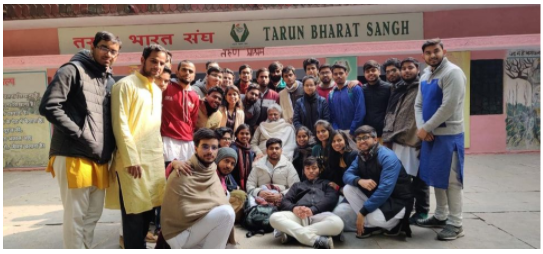

NSS DTU


NSS DTU is the largest student-led organization in the university working in the social sector and aims to bring about a change in society by organizing various events and campaigns pertaining to all aspects of social service. The volunteers commit themselves to the greater good and strive to achieve the best versions of themselves. Awareness regarding the surroundings, identifying social evils pertaining to a region, and formulating and implementing practical ways to tackle them constitute the role of an NSS Volunteer. Both long- and short-term programs in the fields of education, healthcare, road safety, etc., ensure the efficient functioning of NSS as a unit, encouraging teamwork and helping its volunteers grow immensely on a personal level as well.
Vice Chancellor, DTU
The NSS-DTU volunteers make significant contributions to Delhi Technological University (D.T.U.) through their selfless service to the community. Their motto “Not Me But You” instills among them the philosophy of the organization and inspires the volunteers to recognize the needs of different components of the University community as well as the society. The NSS-DTU lays down the path not only for the fullest personality development but also prepares oneself to be a responsible citizen during the student life shoving aside the insular sensibilities based of caste, creed, gender, religion and region. This opportunity one may not get, once he/she gets out of the University. Therefore, University is a right place to make use of this opportunity during their studies. The consistent efforts of volunteers have helped in bringing about a positive change in society. I am sure that the nation building process initiated by National Service Scheme –Delhi Technological University (NSS-DTU) volunteers will go a long way and bring cheers to the society.
Chairman, NSS DTU
The sole objective of any community is to inspire others; and its foundation - its members. The DTU unit of National Service Scheme (NSS) is an attempt to not only provide students with a platform to give back to the society, but also to inculcate a sense of responsibility in today’s youth. We at NSS DTU organize and partake in a variety of campaigns pertaining to various aspects of the society. Realizing the role each individual needs to play in the society, we volunteer our services to not only inspire others, but empower them.
Faculty Coordinator, NSS DTU
NSS DTU, being one of the largest student organizations of our university, has played a pivotal role in ingraining a sense of community among the students and has allowed them to be a part of a more nuanced and global worldview. The motto of NSS DTU, 'Not Me But You', calls for the students to be better and helpful individuals and to fight against societal ills to any extent they can. In these trying times, we upheld our ideals by coming up with new and unique means to provide our services in whatever way we could. With this spirit of community and collaboration, we look forward to another year full of efforts and positive changes.